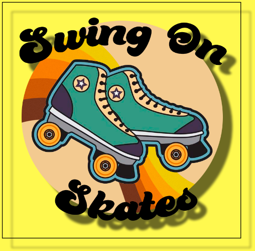

Swing on skates
In the project swing on skates, or better known as "Dans Dans Dans" we had to make a website for a dancing school revolved around swing, where we were given the new concept swing on skates and had to further develop on it and make a new and improved website.
Throughout the project I was in charge of brainstorming and also referred to as "The head of brainstorm" in the project, my job was to come up and find effective brainstorming methods that I could bring to the work and have the group do for a good brainstorming phase.
Besides being the head of brainstorm I also had to code the about swing section and the menu on the site both for mobile and PC. You can see my main menue page for the phone underneath where I made use of various design principles and tried to follow the over all feel of the other pages to match mine.